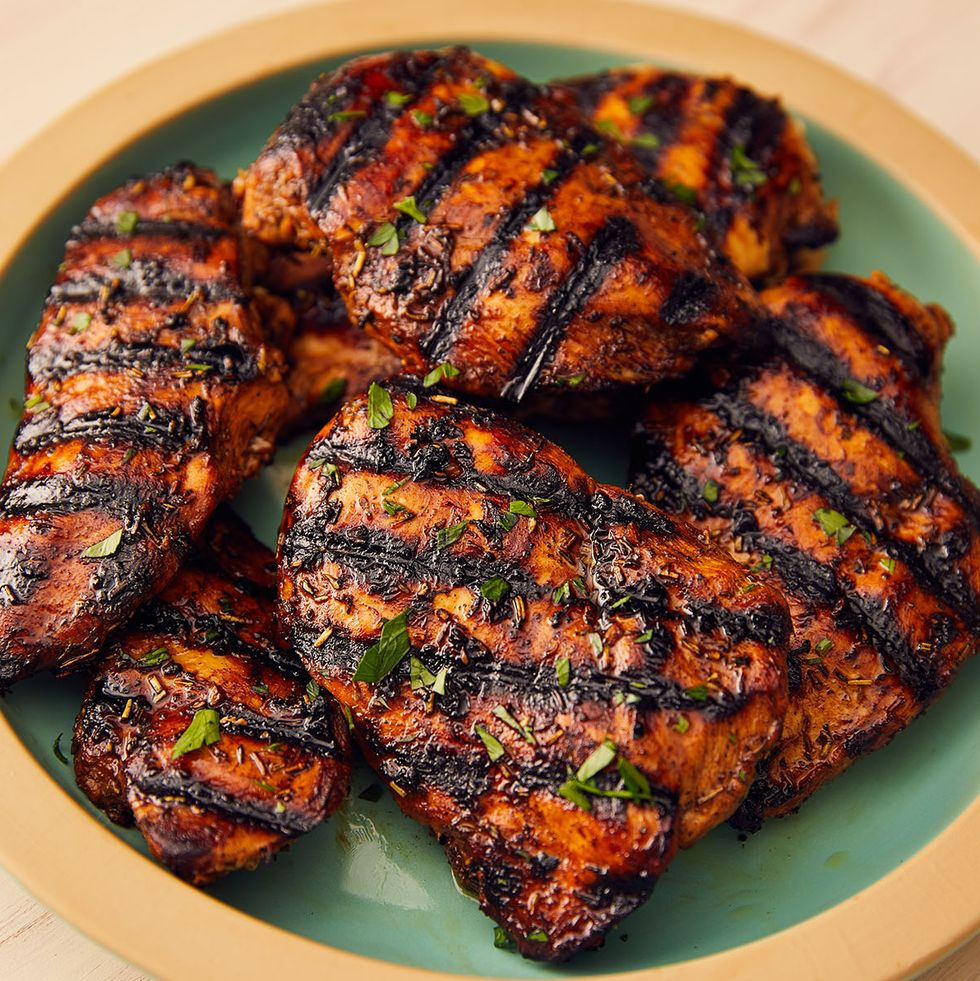

Grilled Chicken

soaked in a super-quick, delicious marinade, you’re guaranteed an absolutely delicious main, perfect for serving with all your fave summer sides.
ingredients
- 1/4 c. balsamic vinegar
- 3 tbsp. extra-virgin olive oil
- 2 tbsp. brown sugar
- 3 cloves garlic, minced
- 1 tsp. dried thyme
- 1 tsp. dried rosemary
- 4 chicken breasts
steps
- In a medium bowl, whisk together balsamic vinegar, olive oil, brown sugar, garlic, and dried herbs, and season generously with salt and pepper. Reserve ¼ cup.
- Add chicken to the bowl and toss to combine. Let marinate at least 20 minutes and up to overnight.
- Preheat grill to medium high. Add chicken and grill, basting with reserved marinade, until cooked through, 6 minutes per side.
- Garnish with parsley before serving.